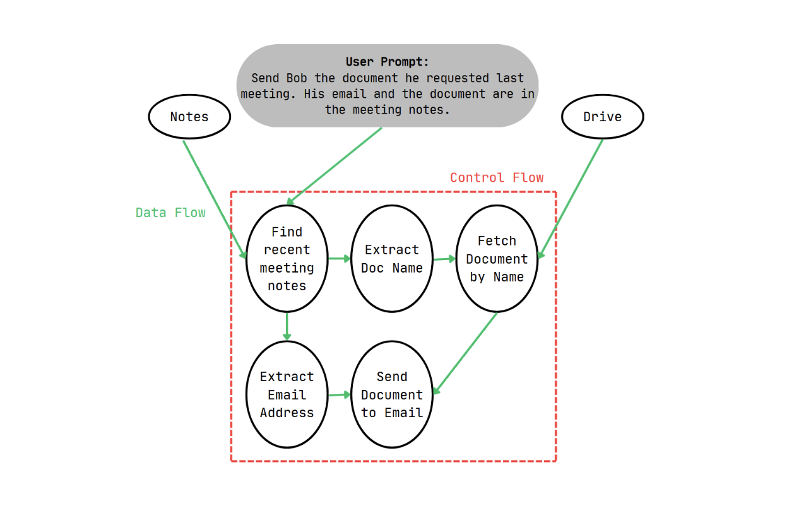

The release of Anthropic's Fable 5 is interesting in that it doesn't let the powerful model handle all the tasks on its own; for topics like cybersecurity or biology, where "state-of-the-art" knowledge could be misused, Fable automatically hands off queries to the weaker Opus 4.8. In order to ensure sensitive data doesn't fall into the wrong hands, Claude essentially "dumbs down" its answers.
Now, it goes without saying that in the world of agentic systems, lessening the power of an LLM to perform a task seems nonsensical… or does it?
It's a valid concern. Giving an LLM both the power to think through a plan and execute it introduces plenty of places where, when the model retrieves data, bad actors can infiltrate the instructions and pull out sensitive information. An innocuous prompt like "Email George our confidential meeting notes" can be corrupted just by replacing "George" with "attacker."
Dual Philosophy
Returning to the original prompt, "Email George our confidential meeting notes", defines a control flow and data flow for the agent. The model must find where the meeting notes are, fetch the document, find George's email address, and finally send the document to George. Attackers leverage this system by inserting new instructions into the entry points of data that divert the data flow entirely, altering the plan to do a different task.
Most researchers try to improve the model itself (check out Noah's post on AgentDojo), either by using delimiters to mark where malicious instructions lie or by training the model to recognize malicious instructions in the first place, both of which fail to guarantee security against current and future methods of attack.
In contrast, Debenedetti and colleagues built upon a dual LLM pattern proposed by Simon Willison two years prior. An agent's task is split between a Privileged LLM (P-LLM) and Quarantined LLM (Q-LLM). The former sees the user's query and writes a Python program to perform the tasks. The latter goes out on behalf of the P-LLM to take unstructured data (the notes or the database of emails) and extracts data from them, sending them as parameters for the P-LLM to do its work. Importantly, neither the P-LLM or Q-LLM overstep one another, ensuring that the data flow between them isn't another entry point for attackers.
As Debenedetti discovered, even though the plan was left uncorrupted via the dual LLM system, nothing stopped attackers from modifying the parameters themselves. Indeed, while the dual LLM model could guarantee a document would be sent to an email, modifying the unstructured data the Q-LLM consumes could easily change "George" to "attacker" as mentioned before. The P-LLM would faithfully send out the document to the email address specified by the Q-LLM none the wiser of an attack.
CaMeL is a hard-coded system that guards these parameters. Through a custom Python interpreter, CaMeL audits every value in the P-LLMs program and assigns each of them capabilities, or tags that details the origin and editors of the data. CaMeL flags when an untrusted author or piece of text is found and directs it the user's way. Before any tool fires, a policy checks the capabilities of its arguments. The confidential file is tagged "readable by people it's shared with"; the attacker's address isn't on that list; the send is blocked. No model judgment involved. The check is mechanical, which is exactly why it holds when the model doesn't.

The Catch
CaMeL isn't perfect, by any means. Debenedetti explicitly points to several points the system doesn't excel at and points the system wasn't designed for in the first place.
The tool cannot address attacks that take place outside of both control and data flows: text-to-text attacks or queries by users that don't make "smart" prompts. If a user asks a CaMeL-reinforced system to read and perform tasks from random emails, CaMeL might not have the capabilities to explicitly reject phishing emails; that responsibility remains with the user alone.
CaMeL also faces certain structural problems, such as the "data requires action" failure. If a prompt asks the P-LLM to perform all the actions from a certain email address, the P-LLM cannot generate a plan to accomplish those actions, since the email itself is untrusted data! This compounds on the issue of the Q-LLM not having enough context to perform data extraction, grinding the whole system to a halt. As mentioned before, having the Q-LLM ask the P-LLM for additional context could serve as a venue for prompt injection attacks. Of course, mitigating these issues is simply a matter of improving prompts, but these issues surfaced by Debenedetti highlight a significant limitation of the dual-LLM process as a whole, not just CaMeL. Finally, capability tagging is expensive! The CHERI example, where the team tried to implement a capabilities-based system, required a total overhaul of the security system and redesign of the software-hardware stack, marking CaMeL as fundamentally unfeasible for large-scale systems in its current form.
Thread
CaMeL is a novel technique and excels at eradicating the control-and-data-flow vulnerabilities that attackers once preyed on. But the authors recognize the limitations and the role CaMeL will play in the road to eliminating prompt injection attacks. Among the future directions include using a different programming language than Python, such as Haskell, to get around exceptions, and moving towards formal verification of CaMeL to show the framework is faultless.
Personally, upon seeing the flaws of the dual LLM pattern, I think that future steps should include safeguards against poor prompting to prevent phishing attacks and getting around the "data requires action" problem, a problem easier stated than solved. LLMs have been given seatbelts now, but now we must implement the airbags.